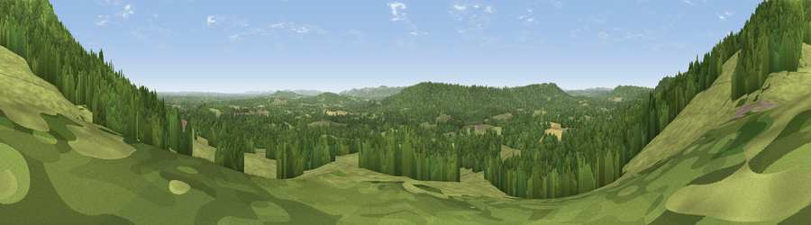

Viewpoint near Fernhurst
#15690 in England · top 20% of its area beats it · near FernhurstThe view, rendered

A 360° render of this exact spot computed from the terrain model, tree cover and land cover — summer colours, afternoon light, calibrated against photographs of famous viewpoints. Real trees, hedges and buildings will differ in detail.
The panorama
Grey silhouette: terrain skyline in each direction (720 bearings, Earth curvature and refraction included). Dashed green: skyline with trees (+15 m) and buildings (+8 m) as obstacles. Blue strip: how far the ground is visible on each bearing.
Where the view opens
Wedge length = distance to the farthest visible ground on that bearing (vegetation-aware). Rings at 10, 25 and 50 km.
What fills the view
53% woodland · 44% grassland · 3% cropland ·
Angular shares of the visible panorama (visual magnitude), not map area. Landscape diversity 0.37 (0–1 Shannon).
Key numbers
More beautiful places nearby
The staircase of upgrades: each row has a higher view potential than everything closer. Driving times are estimates from straight-line distance, calibrated against real road routing — check an actual route before setting out.
| Place | Direction | Drive | Score |
|---|---|---|---|
| Viewpoint near Fernhurst | NNE · 1 km | ~3 min | 75.1 |
| Viewpoint near Cocking | SSW · 12 km | ~23 min | 77.6 |
| Viewpoint near Cocking | SSW · 12 km | ~23 min | 78.3 |
| Linch Down | SSW · 13 km | ~24 min | 85.2 |
| Beacon Hill | SW · 15 km | ~27 min | 85.8 |
| Chanctonbury Ring | SE · 28 km | ~44 min | 87.0 |
| Firle Beacon | ESE · 61 km | ~83 min | 88.9 |
| Viewpoint near Niton | SW · 67 km | ~90 min | 89.2 |
51.04830, -0.69213 · source: screening · position refined by local search. Computed location — check access rights before visiting.